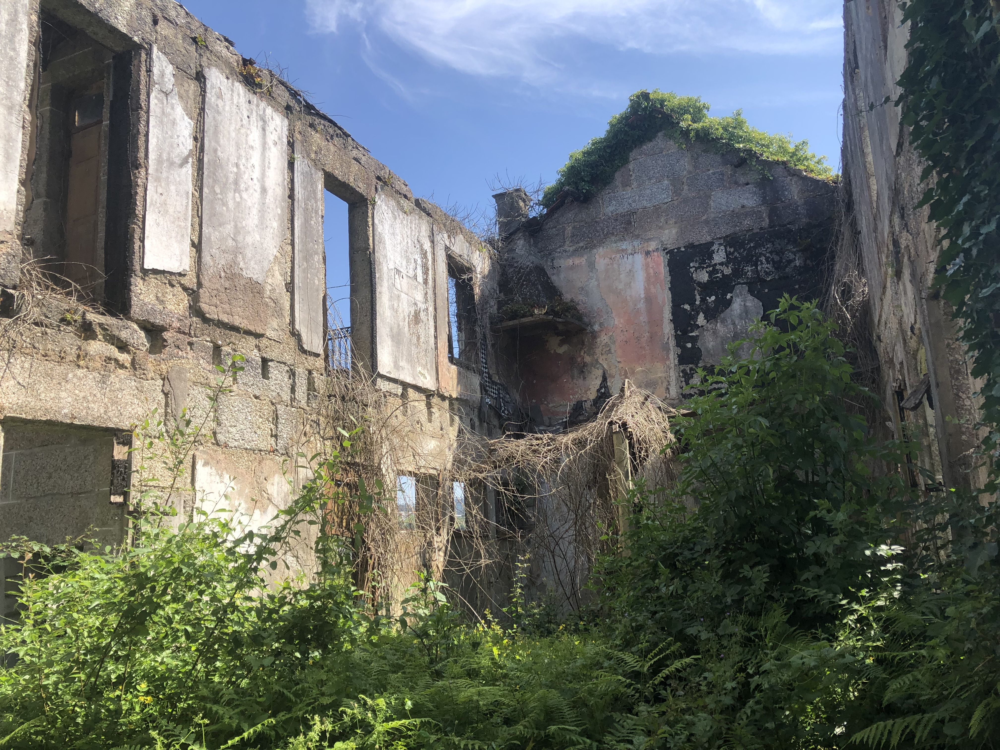

Photo by V.B.Speranza, Wikimedia Commons, CC BY-SA 4.0. No changes made.
You decide to explore the abandoned house. The door makes a strange noise when you open it.
Inside, you see old furniture and dusty paintings. Suddenly, you notice a staircase and a mysterious door.